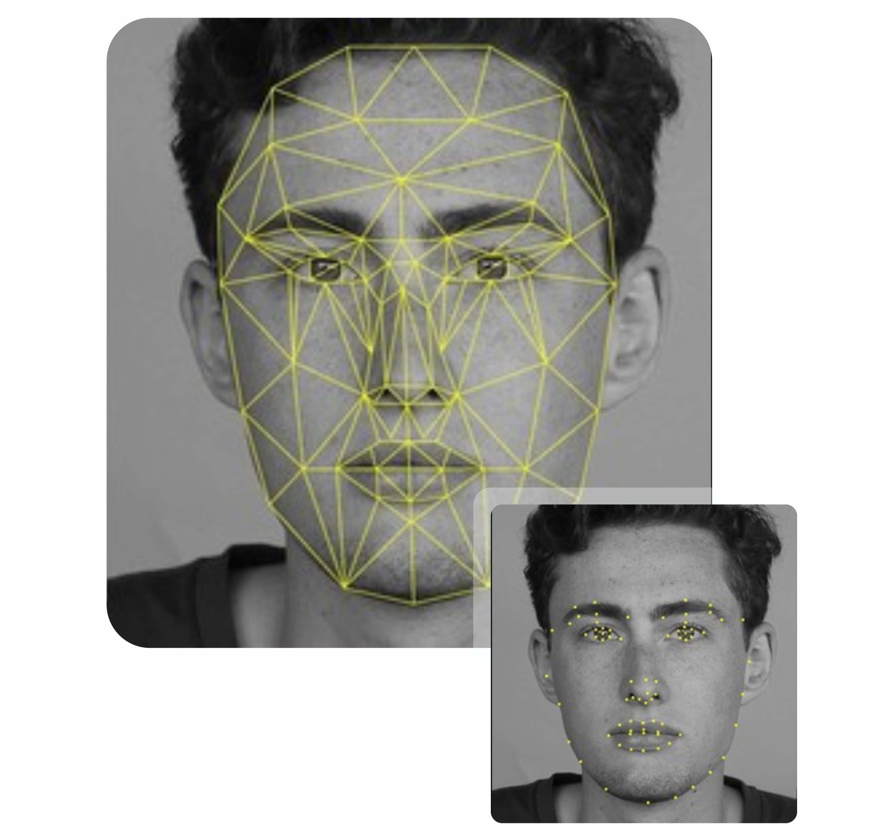

<ion-content>
    <h1 text-center>ID FACIAL</h1>
  <h2>Haremos un escaneo facial de tu rostro para la identificación.</h2>
   
    <ion-button class="botonSig" expand="round" fill="outline"[routerLink]="['/camara']" routerLinkActive="router-link-active"  >Siguiente </ion-button>
  
  </ion-content>